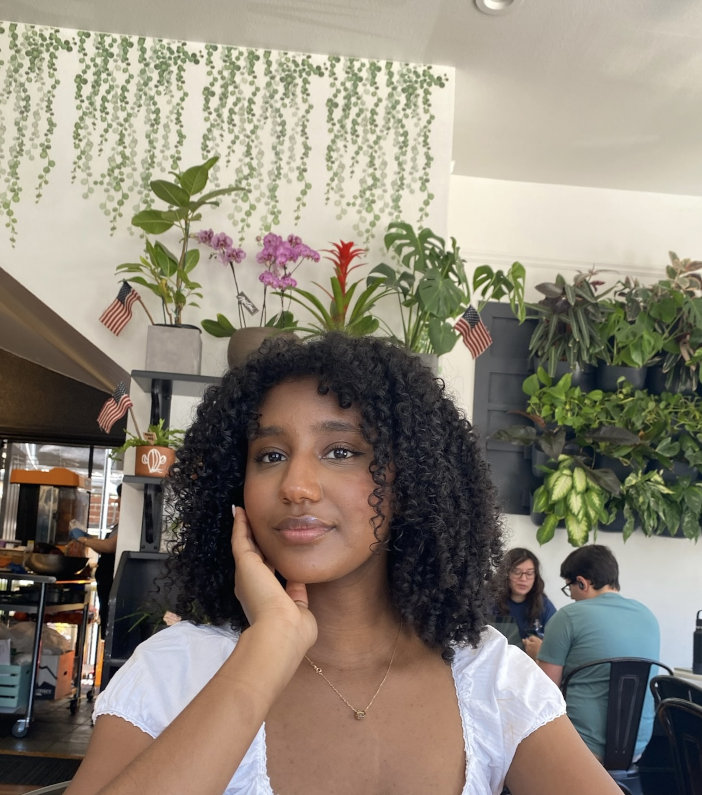

My name is Yabsera, a Communication major with a minor in Data Science from a little neigbourhood in Ethiopia and a current student at USC ✌️
Growing up, our family didn't have much, but I deeply cherished my worn-out 2004 Adidas Predator Pulsados.
Throughout middle school, these were the shoes I eagerly laced up every chance I got to play soccer. Whether it was a 15-minute snack break, a brief 5-minute transition period, or my entire 45-minute lunch, I was always playing.

Our school lacked the funding for an outdoor field, so we used a nearby school's gym, transforming the indoor space into the perfect soccer pitch for a 12-year-old's imagination. My bag, serving as our makeshift goalpost, became a symbol of luck for our little team.
In those moments, the lack of resources made even a full-sized soccer field seem like a distant dream. Yet, I remained dedicated to my academics and honed my soccer skills because they were the two things I loved most.
This commitment, however, was met with challenges in a society where traditional gender roles are deeply entrenched. Neighbors and distant family members often disapproved of my involvement in sports, as I returned home with scuffed clothing and bruised feet. Despite this, I did find joy in traditional roles too, like helping my mother with cooking and cleaning.
However, the expectation to limit myself to these tasks alone challenged my aspirations. It was within this struggle between conforming and pursuing my passion that the idea of 'impossible' started to echo loudly in my mind.
It was during this struggle that I became more determined to prove the opposite, This defiance wasn't just an act of rebellion; it became my silent proclamation that barriers were meant to be broken. It was disheartening to hear that girls shouldn't be involved in sports, but in an ironic twist, it was my dedication to soccer that earned me a scholarship to a high school that would change my life.
POSSIBLE
POSSIBLE
POSSIBLE
POSSIBLE
POSSIBLE
POSSIBLE
POSSIBLE
Working part-time, I eventually bought my first pair of sneakers, the Adidas Superstars. These shoes carried me across my graduation stage after pursuing academic opportunities, research, and after-school activities.
Conducted environmental agriculture labs in partnership with Addis Ababa University
Taught Business and Enterpunership workshops every month to rising high school seniors
Started the first wood-work club at my HS!
They were the heaviest shoes I'd ever worn, symbolizing the weight of my aspirations and responsibilities. While they came with me at my highest points, I also wore them to my father's funeral, a time when success seemed almost unattainable for our family of five. They were on my feet as I sat on campus at 5 am, studying hard for my exams, reflecting on the barriers I faced as a black woman, and reaffirming my belief that nothing is impossible.
My trusty Adidas Superstars
Interestingly, my feet never grew, allowing me to wear the same size shoes when I first stepped onto the campus of USC. Walking around, I carried with me not just the physical representation of my journey of hard work and determination that started with a middle school girl who dreamt of playing soccer.
To me, impossible is intertwined in almost every step of my journey and wrapped around stitch on my shoes. Every time I faced a hurdle, whether it was societal expectations or personal loss, I reminded myself that the impossible is just a milestone waiting to be reached. This belief has been the driving force behind my ambitions!
Joining Adidas would be a full-circle moment, aligning my values with an organization that has been an integral part of my journey. Adidas has been a symbol of hope and resilience for me, right from my cherished Predator Pulsados to the Superstars that walked me through countless milestones.
Just as Adidas has played a pivotal role in my life, I want to contribute to the brand's legacy of encouraging and supporting young talents, especially girls in sports. I envision using my experiences to help Adidas amplify its impact, reaching out to communities similar to mine and showing that dreams, no matter how big, can be achieved.
Today, I have a fascination with the intersection between Technology, Data, and People.
Which is why I chose to delve into Marketing!
With a keen eye for detail üëÅ and an optimistic
mindset ü§©, I aim to bring ideas to life üå± by
crafting experiences that are...
At Adidas, I aspire to connect these fascinations to create stories that connect with a diverse audience together with the narrative that data tells! I am eager to engage in an environment where I can actively embrace feedback, seek diverse perspectives, and participate in creative brainstorming.
My favorite campaign with Asma Elbadawi!
This approach, which I hope to continue at Adidas, has been fundamental in my growth as both a student and a professional. I am enthusiastic about the potential to learn from different sources of inspiration and to observe diverse approaches.
Thank you for considering my application and for the potential opportunity to contribute to such meaningful work!
Thanks for stopping by I'd love to get in touch!
Connect with me via LinkedIn or my email :~)